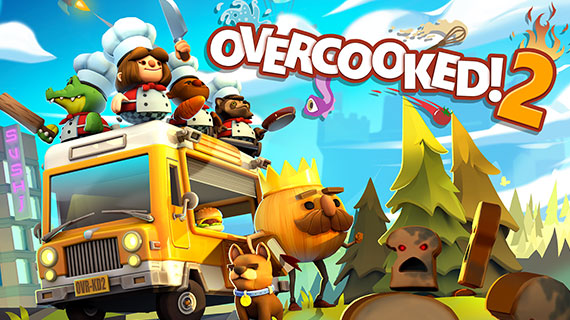

Overcooked 2
O Overcooked voltou trazendo mais caos para a cozinha! Volte para o Reino da Cebola e monte sua equipe de chefs em um jogo cooperativo local ou on-line para até quatro jogadores. Segurem seus aventais ... chegou a hora de salvar o mundo (de novo!)
Confira o vídeo para conhecer mais sobre o jogo
Cuphead
Cuphead é um jogo de ação e tiros clássico, com enorme ênfase nas batalhas de chefes. Inspirado nas
animações infantis da década de 1930, os visuais e efeitos sonoros foram minuciosamente recriados
com as
mesmíssimas técnicas dessa era, com destaque para desenhos feitos à mão, fundos em aquarela e
gravações
originais de jazz.
Jogue como Cuphead ou Mugman (nos modos um só jogador ou cooperativo) e atravesse mundos estranhos,
adquira
novas armas, aprenda supergolpes potentes e descubra segredos ocultos, tudo isso enquanto tenta
pagar a
dívida que você fez com o diabo!

Confira o vídeo para conhecer mais sobre o jogo
Portal 2
Portal 2 baseia-se na premiada fórmula de jogabilidade, história e música inovadoras que rendeu ao
Portal
original mais de 70 prêmios da indústria e uma legião de fãs.
A parte para um jogador de Portal 2 introduz uma gama de novos personagens dinâmicos, vários novos
elementos
de quebra-cabeças e uma quantidade maior de desafiadoras câmaras de teste. Os jogadores explorarão
áreas
nunca antes vistas dos Laboratórios da Aperture Science e reencontrarão GLaDOS, a companheira
robótica com
certa tendência assassina que os guiou no primeiro jogo.
O modo cooperativo para dois jogadores oferece uma campanha distinta com história e câmaras de teste
únicas,
além de dois novos personagens jogáveis. Este novo modo força os jogadores a reconsiderar tudo que
achavam
que sabiam sobre portais. O sucesso exigirá que não apenas ajam, mas que também pensem
cooperativamente.